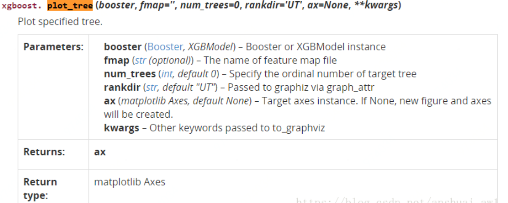
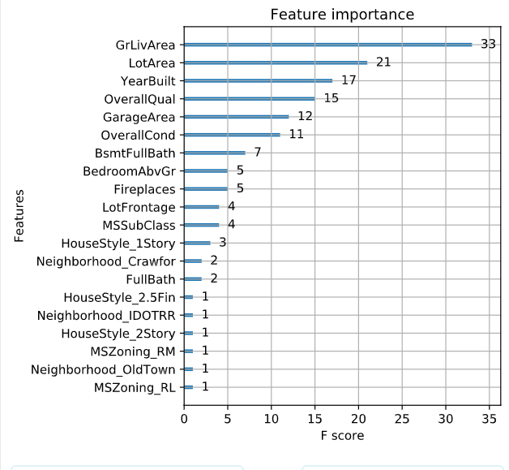

XGBoost-learing
2020-03-07
序言
- XGBoost学习笔记
- 原理推导+实例
Chapter 1 XGBoost
1.1 定义
a novel sparsity-aware algorithm for sparse data and weighted quantile sketch for approximate tree learning. (Chen and Guestrin 2016)
provide insights on cache access patterns, data compression and sharding to build a scalable tree boosting system. By combining these insights, XGBoost scales beyond billions of examples using far fewer resources than existing systems
- 提供了一种有关缓存访问模式，数据压缩和分片，以构建可扩展的boosting tree。 因此，XGBoost使用比现有系统少得多的资源来扩展数十亿个示例。
1.2 特点
The scalability of XGBoost is due to several important systems and algorithmic optimizations. These innovations include: a novel tree learning algorithm is for handling sparse data; a theoretically justified weighted quantile sketch procedure enables handling instance weights in approximate tree learning. Parallel and distributed computing makes learning faster which enables quicker model exploration. More importantly, XGBoost exploits out-of-core computation and enables data scientists to process hundred millions of examples on a desktop. Finally, it is even more exciting to combine these techniques to make an end-to-end system that scales to even larger data with the least amount of cluster resources.
- 可以处理稀疏矩阵
- 合适的权重使得误差较小
- 并行计算更快
- 可以利用核外资源，更快的处理大规模的数据
- 可扩展性强
- 构成一个端到端系统，以最少的集群资源扩展到更大的数据
1.3 正则化目标函数
假设一个数据集有\(n\)个样本和\(m\)个特征，\(\mathcal{D}=\left\{\left(\mathbf{x}_{i}, y_{i}\right)\right\}\left(|\mathcal{D}|=n, \mathbf{x}_{i} \in \mathbb{R}^{m}, y_{i} \in \mathbb{R}\right)\)，一个集成树使用\(k\)个加法模型进行预测。
\(\hat{y}_{i}=\sum_{k=1}^{K} f_{k}\left(x_{i}\right), f_{k} \in \mathcal{F}\) (1)
- \(\hat{y}_{i}\)表示第 i个样本的预测值
- K 表示一共K棵树
- 其中\(\mathcal{F}=\left\{f(\mathbf{x})=w_{q(\mathbf{x})}\right\}\left(q: \mathbb{R}^{m} \rightarrow T, w \in \mathbb{R}^{T}\right)\) ,\(\mathcal{F}\)表示所有基分类器组成的函数空间，比如CART.
- \(q\)表示表示将样本映射到的每棵树上相应的叶子索引
- \(T\)是叶子结点的数量
- \(f_{k}(x_i)\)表示第i个样本样本第k棵树中落在叶子结点得到的权重值
假设我们boosting的基模型用决策树来实现，则一颗生成好的决策树，即结构确定，也就是说树的叶子结点其实是确定了的。假设这棵树的叶子结点有 \(T\) 片叶子，而每片叶子对应的值 \(w \in R^{T}\) 。熟悉决策树的同学应该清楚，每一片叶子结点中样本的预测值都会是一样的，在分类问题中是某一类，在回归问题中，是某一个值（在GBDT中都是回归树，即分类问题转化成对概率的回归了），那么肯定存在这样一个函数\(q:R^d->{1,2,...T}\),即将 \(f_{t}(x)\) 中的每个样本映射到每一个叶子结点上，当然 \(f_{t}(x)\)和 q 我们都是不知道的，但我们也不关心，这里只是说明一下决策树表达数据结构的方法是怎么样的，不理解也没有问题。
下面来正式推导：
\(f_{t}(x)\)可以转化为\(w_{q(x)}\),其中\(q(x)\) 代表了每个样本在哪个叶子结点上,而 \(w_q\) 则代表了哪个叶子结点取什么 \(w\) 值，所以 \(w_{q(x)}\) 就代表了每个样本的取值\(w\) (即预测值).
如果决策树的复杂度可以由正则项来定义 \(\Omega\left(f_{t}\right)=\gamma T+\frac{1}{2} \lambda \sum_{j=1}^{T} w_{j}^{2}\) ，即决策树模型的复杂度由生成的树的叶子节点数量和叶子节点对应的值向量的L2范数决定。
在回归问题中，需要求出的就是\(f_{k}\),也就是每个树的结构和每个叶子结点的权重
1.4 XGBoost目标函数
损失函数+正则项
常见的损失函数是均方误差MSE
常见的正则项有L1,L2
一般常数项忽略不计
\(\mathcal{L}(\phi)=\sum_{i} l\left(\hat{y}_{i}, y_{i}\right)+\sum_{k} \Omega\left(f_{k}\right)\)
where \(\Omega(f)=\gamma T+\frac{1}{2} \lambda\|w\|^{2}\) (2)
- \(\sum_{i} l\left(\hat{y}_{i},y_{i}\right)\)是损失函数，也就是训练误差，换句话说就是训练出来的函数与测试集的匹配程度。
- \(\sum_{k} \Omega\left(f_{k}\right)\)表示模型的复杂度，也就是分段的琐碎程度
- 加入正则惩罚项时为了防止过拟合
1.5 常见正则项
岭回归Ridge：由方差和L2范数构成 \(\sum_{i=1}^{n}\left(y_{i}-w^{T} x_{i}\right)^{2}+\lambda\|w\|^{2}\)
套索回归Lasso：方差和L1范数构成 \(\sum_{i=1}^{n}\left(y_{i}-w^{T} x_{i}\right)^{2}+\lambda\|w\|_{1}\)
logistics回归：logistics误差和L2范数构成，主要用于二分类问题，最常见 \(\sum_{i=1}^{n}\left[y_{i} \ln \left(1+e^{-w^{T} x_{i}}\right)+\left(1-y_{i}\right) \ln \left(1+e^{w^{T} x_{i}}\right)\right]+\lambda\|w\|^{2}\)
训练模型的目标就是得到最小化的损失函数，因此需要，\(\mathcal{L}(\phi)\)越小越好，那就是\(\sum_{i} l\left(\hat{y}_{i},y_{i}\right)\)和正则项都取小，但是根据trade-off思维，需要权衡bias和variance的大小
为什么说加入正则化可以防止过拟合
The regularization term is what people usually forget to add. The regularization term controls the complexity of the model, which helps us to avoid overfitting.
正则项时我们假设反应模型的复杂度的，因此模型应该是越简单越好，需要加入正则项进行控制
L2范数Ridge：\(\Omega(w)=\lambda\|w\|^{2}\)，可以认为是模的平方
L1范数Lasso：\(\Omega(w)=\lambda\|w\|_{1}\)
1.6 损失函数分类
若训练误差为：\(l\left(y, \hat{y}_{i}\right)=\left(y_{i}-\hat{y}_{i}\right)^{2}\)，此时就是GBDT
若训练误差为\(l\left(y, \hat{y}_{i}\right)=y_{i} \ln \left(1+e^{-\hat{y}_{i}}+\left(1-y_{i}\right) \ln \left(1+e^{\hat{y}_{i}}\right)\right)\)那就是logistics
1.7 贪心算法
贪心算法的思想就是一棵树，一棵树的往上加，加到K棵树直到算法停止 对于Boosting来说，它采用的是前向优化算法，即从前往后，逐渐建立基模型来优化逼近目标函数，具体过程如下：
$$ \begin{aligned} &{i}^{0}=0\ &{i}^{1}=f_{1}(x_{i})={i}^{0}+f{1}(x_{i})\ &\begin{array}{l} {i}^{2}=f{1}(x_{i})+f_{2}(x_{i})={i}^{1}+f{2}(x_{i}) \
\
{i}^{t}={k=1}^{t} f_{k}(x_{i})={i}^{t-1}+f{t}(x_{i}) \end{array} \end{aligned} $$
其中\(f_{k}\)的加入，也就是新模型的(损失函数)加入总是以优化目标函数为目的的。
1.8 过程
以第t步的模型拟合为例，在这一步，模型对第 \(i\)个样本 \(x_i\) 的预测为： \(\hat{y}_{i}^{t}=\hat{y}_{i}^{t-1}+f_{t}\left(x_{i}\right)\)
其中 \(f_{t}(x_{i})\) 就是我们这次需要加入的新模型，即需要拟合的模型，此时，目标函数就可以写成：
\(\begin{aligned} O b j^{(t)} &=\sum_{i=1}^{n} l\left(y_{i}, \hat{y}_{i}^{t}\right)+\sum_{i=i}^{t} \Omega\left(f_{i}\right) \\ &=\sum_{i=1}^{n} l\left(y_{i}, \hat{y}_{i}^{t-1}+f_{t}\left(x_{i}\right)\right)+\Omega\left(f_{t}\right)+\text { constant } \end{aligned}\) (3)
因此当求出最优目标函数的时候也就相当于求出了\(f_{t}\left(x_{i}\right)\)
GBDT的梯度算出来实际上就是残差，梯度小残差就小，所以该样本拟合较好，不需要去拟合他们
我们知道泰勒公式中，若\(\Delta x\) 很小时，我们只保留二阶导是合理的（GBDT是一阶导，XGBoost是二阶导，我们以二阶导为例，一阶导可以自己去推，因为更简单） 或许也可以说我们更希望将优化问题转化为一个凸优化问题，因此而引入二阶泰特展开式，即：
\(f(x+\Delta x) \approx f(x)+f^{\prime}(x) \Delta x+\frac{1}{2} f^{\prime \prime}(x) \Delta x^{2}\) (4)
那么在等式（3）中，我们把 \(\hat{y}_{i}^{t-1}\) 看成是等式（4）中的x， \(f_{t}\left(x_{i}\right)\) 看成是 \(\Delta x\) ，因此等式（3）可以写成：
\(O b j^{(t)}=\sum_{i=1}^{n}\left[l\left(y_{i}, \hat{y}_{i}^{t-1}\right)+g_{i} f_{t}\left(x_{i}\right)+\frac{1}{2} h_{i} f_{t}^{2}\left(x_{i}\right)\right]+\Omega\left(f_{t}\right)+\) constant (5)
其中 \(g_{i}\) 为损失函数的一阶导， \(h_i\) 为损失函数的二阶导，注意这里的导是对 \(\hat{y}_{i}^{t-1}\) 求导。我们以 平方损失函数为例\(\sum_{i=1}^{n}\left(y_{i}-\left(\hat{y}_{i}^{t-1}+f_{t}\left(x_{i}\right)\right)\right)^{2}\) ，则分别给出\(g_i\),\(h_i\)
\(g_{i}=\partial_{\hat{y}^{t-1}}\left(\hat{y}^{t-1}-y_{i}\right)^{2}=2\left(\hat{y}^{t-1}-y_{i}\right), \quad h_{i}=\partial_{\hat{y}^{t-1}}^{2}\left(\hat{y}^{t-1}-y_{i}\right)^{2}=2\)
由于在第t步 \(\hat{y}_{i}^{t-1}\) 其实是一个已知的值，所以 \(l\left(y_{i}, \hat{y}_{i}^{t-1}\right)\) 是一个常数，其对函数优化不会产生影响，因此，等式（3）可以写成： \(O b j^{(t)} \approx \sum_{i=1}^{n}\left[g_{i} f_{t}\left(x_{i}\right)+\frac{1}{2} h_{i} f_{t}^{2}\left(x_{i}\right)\right]+\Omega\left(f_{t}\right)\) (6)
所以我么只要求出每一步损失函数的一阶和二阶导的值(由于前一步的 \(\hat{y}_{i}^{t-1}\) 是已知的，所以这两个值就是常数)代入等式4，然后最优化目标函数，就可以得到每一步的 \(f(x)\) ，最后根据加法模型得到一个整体模型
1.9 如何使用决策树表示目标函数
假设我们boosting的基模型用决策树来实现，则一颗生成好的决策树，即结构确定，也就是说树的叶子结点其实是确定了的。假设这棵树的叶子结点有 \(T\) 片叶子，而每片叶子对应的值 \(w \in R^{T}\) 。熟悉决策树的同学应该清楚，每一片叶子结点中样本的预测值都会是一样的，在分类问题中是某一类，在回归问题中，是某一个值（在GBDT中都是回归树，即分类问题转化成对概率的回归了），那么肯定存在这样一个函数\(q:R^d->{1,2,...T}\),即将 \(f_{t}(x)\) 中的每个样本映射到每一个叶子结点上，当然 \(f_{t}(x)\)和 q 我们都是不知道的，但我们也不关心，这里只是说明一下决策树表达数据结构的方法是怎么样的，不理解也没有问题。
下面来正式推导：
\(f_{t}(x)\)可以转化为\(w_{q(x)}\),其中\(q(x)\) 代表了每个样本在哪个叶子结点上,而 \(w_q\) 则代表了哪个叶子结点取什么 \(w\) 值，所以 \(w_{q(x)}\) 就代表了每个样本的取值\(w\) (即预测值).
如果决策树的复杂度可以由正则项来定义 \(\Omega\left(f_{t}\right)=\gamma T+\frac{1}{2} \lambda \sum_{j=1}^{T} w_{j}^{2}\) ，即决策树模型的复杂度由生成的树的叶子节点数量和叶子节点对应的值向量的L2范数决定。
我们假设 \(I_{j}=\left\{i | q\left(x_{i}\right)=j\right\}\) 为第 j 个叶子节点的样本集合，则等式4根据上面的一些变换可以写成：
\(\begin{aligned} O b j^{(t)} & \approx \sum_{i=1}^{n}\left[g_{i} f_{t}\left(x_{i}\right)+\frac{1}{2} h_{i} f_{t}^{2}\left(x_{i}\right)\right]+\Omega\left(f_{t}\right) \\ &=\sum_{i=1}^{n}\left[g_{i} w_{q\left(x_{i}\right)}+\frac{1}{2} h_{i} w_{q\left(x_{i}\right)}^{2}\right]+\gamma T+\frac{1}{2} \lambda \sum_{j=1}^{T} w_{j}^{2} \\ &=\sum_{j=1}^{T}\left[\left(\sum_{i \in I_{j}} g_{i}\right) w_{j}+\frac{1}{2}\left(\sum_{i \in I_{j}} h_{i}+\lambda\right) w_{j}^{2}\right]+\gamma T \end{aligned}\) (7)
即我们之前样本的集合，现在都改写成叶子结点的集合，由于一个叶子结点有多个样本存在，因此才有了\(\sum_{i \in I_{j}} g_{i}\)和\(\sum_{i \in I_{j}} h_{i}\)两 项， 定义\(G_i=\sum_{i \in I_{j}} g_{i}\),\(H_i=\sum_{i \in I_{j}} h_{i}\),
则公式7可以写成: \(O b j^{(t)}=\sum_{j=1}^{T}\left[G_{j} w_{j}+\frac{1}{2}\left(H_{j}+\lambda\right) w_{j}^{2}\right]+\gamma T\)
1.10 优化目标函数
那么对于单棵决策树，一种理想的优化状态就是枚举所有可能的树结构，因此过程如下：
a、首先枚举所有可能的树结构，即 \(q\)；
b、计算每种树结构下的目标函数值，即等式7的值；
c、取目标函数最小（大）值为最佳的数结构，根据等式6求得每个叶子节点的 \(w\) 取值，即样本的预测值。
但上面的方法肯定是不可行的，因为树的结构千千万，所以一般用贪心策略来优化：
a、从深度为0的树开始，对每个叶节点枚举所有的可用特征
b、 针对每个特征，把属于该节点的训练样本根据该特征值升序排列，通过线性扫描的方式来决定该特征的最佳分裂点，并记录该特征的最大收益（采用最佳分裂点时的收益）
c、 选择收益最大的特征作为分裂特征，用该特征的最佳分裂点作为分裂位置，把该节点生长出左右两个新的叶节点，并为每个新节点关联对应的样本集
d、回到第1步，递归执行到满足特定条件为止
1.11 分裂结点
那么如何计算上面的收益呢，很简单，仍然紧扣目标函数就可以了。假设我们在某一节点上二分裂成两个节点，分别是左（L）右（R），则分列前的目标函数是: \[-\frac{1}{2}\left[\frac{\left(G_{L}+G_{R}\right)^{2}}{H_{L}+H_{R}+\lambda}\right]+\gamma\] 分裂后\[-\frac{1}{2}\left[\frac{G_{L}^{2}}{H_{L}+\lambda}+\frac{G_{R}^{2}}{H_{R}+\lambda}\right]+2\gamma\]，则对于目标函数来说，分裂后的收益是（这里假设是最小化目标函数，所以用分裂前-分裂后） \[Gain =\frac{1}{2}\left[\frac{G_{L}^{2}}{H_{L}+\lambda}+\frac{G_{R}^{2}}{H_{R}+\lambda}-\frac{\left(G_{L}+G_{R}\right)^{2}}{H_{L}+H_{R}+\lambda}\right]-\gamma\]
如果增益Gain>0，即分裂为两个叶子节点后，目标函数下降了，那么我们会考虑此次分裂的结果。
但是，在一个结点分裂时，可能有很多个分裂点，每个分裂点都会产生一个增益，如何才能寻找到最优的分裂点呢？接下来会讲到。
1.12 寻找最佳分裂点
在分裂一个结点时，我们会有很多个候选分割点，寻找最佳分割点的大致步骤如下：
遍历每个结点的每个特征； 对每个特征，按特征值大小将特征值排序； 线性扫描，找出每个特征的最佳分裂特征值； 在所有特征中找出最好的分裂点（分裂后增益最大的特征及特征值） 上面是一种贪心的方法，每次进行分裂尝试都要遍历一遍全部候选分割点，也叫做全局扫描法。
但当数据量过大导致内存无法一次载入或者在分布式情况下，贪心算法的效率就会变得很低，全局扫描法不再适用。
特征预排序+缓存：XGBoost在训练之前，预先对每个特征按照特征值大小进行排序，然后保存为block结构，后面的迭代中会重复地使用这个结构，使计算量大大减小。
分位点近似法：对每个特征按照特征值排序后，采用类似分位点选取的方式，仅仅选出常数个特征值作为该特征的候选分割点，在寻找该特征的最佳分割点时，从候选分割点中选出最优的一个。
并行查找：由于各个特性已预先存储为block结构，XGBoost支持利用多个线程并行地计算每个特征的最佳分割点，这不仅大大提升了结点的分裂速度，也极利于大规模训练集的适应性扩展。
1.13 停止生长
一棵树不会一直生长下去，下面是一些常见的限制条件。
当新引入的一次分裂所带来的增益Gain<0时，放弃当前的分裂。这是训练损失和模型结构复杂度的博弈过程。
当树达到最大深度时，停止建树，因为树的深度太深容易出现过拟合，这里需要设置一个超参数max_depth。
当引入一次分裂后，重新计算新生成的左、右两个叶子结点的样本权重和。如果任一个叶子结点的样本权重低于某一个阈值，也会放弃此次分裂。这涉及到一个超参数:最小样本权重和，是指如果一个叶子节点包含的样本数量太少也会放弃分裂，防止树分的太细，这也是过拟合的一种措施。
1.14 总结
a、算法在拟合的每一步都新生成一颗决策树；
b、在拟合这棵树之前，需要计算损失函数在每个样本上的一阶导和二阶导，即 \(g_i\) 和 \(h_i\) ；
c、通过上面的贪心策略生成一颗树，计算每个叶子结点的的 \(G_j\)和 \(H_j\) ，利用等式6计算预测值 \(w\) ；
d、把新生成的决策树 \(f_{t}(x)\) 加入 \(\hat{y}_{i}^{t}=\hat{y}_{i}^{t-1}+\epsilon f_{t}\left(x_{i}\right)\) ，其中\(\epsilon\) 为学习率，主要为了抑制模型的过拟
Chapter 2 XGBoost20问
2.1 简述XGBoost
首先需要说一说GBDT，它是一种基于boosting(串行)增强策略的加法模型，训练的时候采用前向分布算法进行贪婪的学习，每次迭代都学习一棵CART树来拟合之前 t-1 棵树的预测结果与训练样本真实值的残差。
XGBoost对GBDT进行了一系列优化，比如损失函数进行了二阶泰勒展开、目标函数加入正则项、支持并行和默认缺失值处理等，在可扩展性和训练速度上有了巨大的提升，但其核心思想没有大的变化
2.2 XGBoost与GBDT的差异
基分类器：XGBoost的基分类器不仅支持CART决策树，还支持线性分类器，在支持线性分类器的时候XGBoost相当于加入L1和L2的logistic回归(分类)，或者线性回归(回归)。
损失函数导数：XGBoost对损失函数做了二阶泰勒展开式，GBDT只是一阶泰勒，，并且，XGBoost还支持自定义损失函数，只要损失函数一阶，二阶可导。
正则项：XGBoost的目标函数加了正则项惩罚，相当于预剪枝，使学习出来的模型更加不容易过拟合，泛化能力相对更强。
列抽样：列抽样个人理解就是随机属性取样，与随机森林相似，可防止过拟合。
缺失值处理：对树中的每个非叶子结点，XGBoost可以自动学习出它默认的分裂方向，若某个仰恩该特征缺失，会将其划入默认分支。
并行化：不是tree的维度并行，而是特征维度并行。XGBoost预先将每个特征按特征值排好顺序，存储为块结构，分裂结点时可以采用线性并行查找每个特征的最佳分割点，极大提升训练速度。
2.3 XGBoost为何使用二阶泰勒展开
准确性：相对于GBDT一阶泰勒展开，XGBoost采用二阶泰勒展开精度更加靠近真实的损失函数。
可扩展性：损失函数支持自定义，只需要新的损失函数二阶可导就行。
2.4 XGBoost为何可并行训练
XGBoost的并行并不是每棵树都可以并行训练，XGB本质上仍然采用boosting思维，每棵树训练前需要等前面的树训练完成才能开始训练。也就是加法思维
XGBoost的并行是指特征维度的并行，在训练之前，每个特征按特征值对样本进行预排序，并存储为block结构，在后面查找特征分割点时可以重复使用，而且特征值已经被存储为一个个block结构，那么在寻找每个特征的最佳分割点时，可以利用多线程对每个block进行计算。
2.5 XGBoost为何快
分块并行：训练前每个特征按特征值进行排序并存储为Block结构，后面查找特征分割点时重复使用，并且支持并行查找每个特征的分割点
候选分位点：每个特征采用常数个分位点作为候选分割点
CPU cache 命中优化：使用缓存预取的方法，对每个线程分配一个连续的buffer，读取每个block中样本的梯度信息并存入连续的Buffer中。
Block 处理优化：Block预先放入内存；Block按列进行解压缩；将Block划分到不同硬盘来提高吞吐
2.6 XGBoost防止过拟合的方法
- 加入正则项：叶子结点的个数+叶子结点的权重
- 属性抽样，训练时只选取一部分特征，不考虑block剩余部分
- 子采样：每轮计算可以不使用全部样本，使算法更加保守
- shrinkage: 可以叫学习率或步长，为了给后面的训练留出更多的学习空间
2.7 XGBoost处理缺失值
模型的一个优点就是允许特征存在缺失值。对缺失值的处理方式如下：
在特征k上寻找最佳 split point 时，不会对该列特征 missing 的样本进行遍历，而只对该列特征值为 non-missing 的样本上对应的特征值进行遍历，通过这个技巧来减少了为稀疏离散特征寻找 split point 的时间开销。
在逻辑实现上，为了保证完备性，会将该特征值missing的样本分别分配到左叶子结点和右叶子结点，两种情形都计算一遍后，选择分裂后增益最大的那个方向（左分支或是右分支），作为预测时特征值缺失样本的默认分支方向。
如果在训练中没有缺失值而在预测中出现缺失，那么会自动将缺失值的划分方向放到右子结点。
2.8 XGBoost叶子结点权重计算过程
2.9 XGBoost一棵树停止生长的条件
当新引入的一次分裂所带来的增益Gain<0时，放弃当前的分裂。这是训练损失和模型结构复杂度的博弈过程。
当树达到最大深度时，停止建树，因为树的深度太深容易出现过拟合，这里需要设置一个超参数max_depth。
当引入一次分裂后，重新计算新生成的左、右两个叶子结点的样本权重和。如果任一个叶子结点的样本权重低于某一个阈值，也会放弃此次分裂。这涉及到一个超参数:最小样本权重和，是指如果一个叶子节点包含的样本数量太少也会放弃分裂，防止树分的太细。
2.10 RF和GBDT的区别
2.10.1 相同
都是由多棵树组成，最终的结果都是由多棵树一起决定。
2.10.2 不同
- 集成学习：RF属于bagging思想，而GBDT是boosting思想
- 偏差-方差权衡：RF不断的降低模型的方差，而GBDT不断的降低模型的偏差
- 训练样本：RF每次迭代的样本是从全部训练集中有放回抽样形成的，而GBDT每次使用全部样本
- 并行性：RF的树可以并行生成，而GBDT只能顺序生成(需要等上一棵树完全生成)
- 最终结果：RF最终是多棵树进行多数表决（回归问题是取平均），而GBDT是加权融合
- 数据敏感性：RF对异常值不敏感，而GBDT对异常值比较敏感
- 泛化能力：RF不易过拟合，而GBDT容易过拟合
2.11 XGBoost如何处理不平衡数据
对于不平衡的数据集，例如用户的购买行为，肯定是极其不平衡的，这对XGBoost的训练有很大的影响，XGBoost有两种自带的方法来解决：
第一种，如果你在意AUC，采用AUC来评估模型的性能，那你可以通过设置scale_pos_weight来平衡正样本和负样本的权重。例如，当正负样本比例为1:10时，scale_pos_weight可以取10；
第二种，如果你在意概率(预测得分的合理性)，你不能重新平衡数据集(会破坏数据的真实分布)，应该设置max_delta_step为一个有限数字来帮助收敛（基模型为LR时有效）。
原话是这么说的： >For common cases such as ads clickthrough log, the dataset is extremely imbalanced. This can affect the training of xgboost model, and there are two ways to improve it. If you care only about the ranking order (AUC) of your prediction Balance the positive and negative weights, via scale_pos_weight Use AUC for evaluation If you care about predicting the right probability In such a case, you cannot re-balance the dataset In such a case, set parameter max_delta_step to a finite number (say 1) will help convergence
那么，源码到底是怎么利用scale_pos_weight来平衡样本的呢，是调节权重还是过采样呢？请看源码：
可以看出，应该是增大了少数样本的权重。
除此之外，还可以通过上采样、下采样、SMOTE算法或者自定义代价函数的方式解决正负样本不平衡的问题。
2.12 比较LR和GBDT
先说说LR和GBDT的区别：
LR是线性模型，可解释性强，很容易并行化，但学习能力有限，需要大量的人工特征工程 GBDT是非线性模型，具有天然的特征组合优势，特征表达能力强，但是树与树之间无法并行训练，而且树模型很容易过拟合； 当在高维稀疏特征的场景下，LR的效果一般会比GBDT好。原因如下：
先看一个例子：
假设一个二分类问题，label为0和1，特征有100维，如果有1w个样本，但其中只要10个正样本1，而这些样本的特征 f1的值为全为1，而其余9990条样本的f1特征都为0(在高维稀疏的情况下这种情况很常见)。
我们都知道在这种情况下，树模型很容易优化出一个使用f1特征作为重要分裂节点的树，因为这个结点直接能够将训练数据划分的很好，但是当测试的时候，却会发现效果很差，因为这个特征f1只是刚好偶然间跟y拟合到了这个规律，这也是我们常说的过拟合。
那么这种情况下，如果采用LR的话，应该也会出现类似过拟合的情况呀：y = W1f1 + Wifi+….，其中 W1特别大以拟合这10个样本。为什么此时树模型就过拟合的更严重呢？
仔细想想发现，因为现在的模型普遍都会带着正则项，而 LR 等线性模型的正则项是对权重的惩罚，也就是 W1一旦过大，惩罚就会很大，进一步压缩 W1的值，使他不至于过大。但是，树模型则不一样，树模型的惩罚项通常为叶子节点数和深度等，而我们都知道，对于上面这种 case，树只需要一个节点就可以完美分割9990和10个样本，一个结点，最终产生的惩罚项极其之小。
这也就是为什么在高维稀疏特征的时候，线性模型会比非线性模型好的原因了：带正则化的线性模型比较不容易对稀疏特征过拟合。
2.13 XGBoost中如何对树进行剪枝
在目标函数中增加了正则项：使用叶子结点的数目和叶子结点权重的L2模的平方，控制树的复杂度。
在结点分裂时，定义了一个阈值，如果分裂后目标函数的增益小于该阈值，则不分裂。
当引入一次分裂后，重新计算新生成的左、右两个叶子结点的样本权重和。如果任一个叶子结点的样本权重低于某一个阈值（最小样本权重和），也会放弃此次分裂。
XGBoost 先从顶到底建立树直到最大深度，再从底到顶反向检查是否有不满足分裂条件的结点，进行剪枝。
2.14 XGBoost如何选择最佳分裂点
XGBoost在训练前预先将特征按照特征值进行了排序，并存储为block结构，以后在结点分裂时可以重复使用该结构。 因此，可以采用特征并行的方法利用多个线程分别计算每个特征的最佳分割点，根据每次分裂后产生的增益，最终选择增益最大的那个特征的特征值作为最佳分裂点。 如果在计算每个特征的最佳分割点时，对每个样本都进行遍历，计算复杂度会很大，这种全局扫描的方法并不适用大数据的场景。XGBoost还提供了一种直方图近似算法，对特征排序后仅选择常数个候选分裂位置作为候选分裂点，极大提升了结点分裂时的计算效率。
2.15 XGBoost的Scalable性如何体现
基分类器的scalability：弱分类器可以支持CART决策树，也可以支持LR和Linear。 目标函数的scalability：支持自定义loss function，只需要其一阶、二阶可导。有这个特性是因为泰勒二阶展开，得到通用的目标函数形式。 学习方法的scalability：Block结构支持并行化，支持 Out-of-core计算。
2.16 XGBoost如何评价特征的重要性
我们采用三种方法来评判XGBoost模型中特征的重要程度：
官方文档： （1）weight - the number of times a feature is used to split the data across all trees. （2）gain - the average gain of the feature when it is used in trees. （3）cover - the average coverage of the feature when it is used in trees.
weight ：该特征在所有树中被用作分割样本的特征的总次数。
gain ：该特征在其出现过的所有树中产生的平均增益。
cover ：该特征在其出现过的所有树中的平均覆盖范围。
注意：覆盖范围这里指的是一个特征用作分割点后，其影响的样本数量，即有多少样本经过该特征分割到两个子节点。
2.17 XGBooost参数调优的一般步骤
首先需要初始化一些基本变量，例如：
max_depth = 5
min_child_weight = 1
gamma = 0
subsample, colsample_bytree = 0.8
scale_pos_weight = 1
- 确定learning rate和estimator的数量 learning rate可以先用0.1，用cv来寻找最优的estimators
- max_depth和 min_child_weight 我们调整这两个参数是因为，这两个参数对输出结果的影响很大。我们首先将这两个参数设置为较大的数，然后通过迭代的方式不断修正，缩小范围。
max_depth，每棵子树的最大深度，check from range(3,10,2)。
min_child_weight，子节点的权重阈值，check from range(1,6,2)。
如果一个结点分裂后，它的所有子节点的权重之和都大于该阈值，该叶子节点才可以划分。
- gamma 也称作最小划分损失min_split_loss，check from 0.1 to 0.5，指的是，对于一个叶子节点，当对它采取划分之后，损失函数的降低值的阈值。 如果大于该阈值，则该叶子节点值得继续划分
如果小于该阈值，则该叶子节点不值得继续划分
- subsample, colsample_bytree subsample是对训练的采样比例
colsample_bytree是对特征的采样比例
both check from 0.6 to 0.9
- 正则化参数 alpha 是L1正则化系数，try 1e-5, 1e-2, 0.1, 1, 100
lambda 是L2正则化系数
- 降低学习率 降低学习率的同时增加树的数量，通常最后设置学习率为0.01~0.1
2.18 XGBoost模型如果过拟合了怎么解决
当出现过拟合时，有两类参数可以缓解： - 第一类参数：用于直接控制模型的复杂度。包括max_depth,min_child_weight,gamma - 等参数 第二类参数：用于增加随机性，从而使得模型在训练时对于噪音不敏感。包括subsample,colsample_bytree - 还有就是直接减小learning rate，但需要同时增加estimator 参数。 ## 为什么XGBoost相比某些模型对缺失值不敏感
对存在缺失值的特征，一般的解决方法是：
离散型变量：用出现次数最多的特征值填充；
连续型变量：用中位数或均值填充；
一些模型如SVM和KNN，其模型原理中涉及到了对样本距离的度量，如果缺失值处理不当，最终会导致模型预测效果很差。
而树模型对缺失值的敏感度低，大部分时候可以在数据缺失时时使用。原因就是，一棵树中每个结点在分裂时，寻找的是某个特征的最佳分裂点（特征值），完全可以不考虑存在特征值缺失的样本，也就是说，如果某些样本缺失的特征值缺失，对寻找最佳分割点的影响不是很大。 XGBoost对缺失数据有特定的处理方法，详情参考上篇文章第7题。
因此，对于有缺失值的数据在经过缺失处理后： - 当数据量很小时，优先用朴素贝叶斯 - 数据量适中或者较大，用树模型，优先XGBoost - 数据量较大，也可以用神经网络 - 避免使用距离度量相关的模型，如KNN和SVM
2.19 XGBoost和LightGBM的区别
- （1）树生长策略：XGB采用level-wise的分裂策略，LGB采用leaf-wise的分裂策略。XGB对每一层所有节点做无差别分裂，但是可能有些节点增益非常小，对结果影响不大，带来不必要的开销。Leaf-wise是在所有叶子节点中选取分裂收益最大的节点进行的，但是很容易出现过拟合问题，所以需要对最大深度做限制 。
- （2）分割点查找算法：XGB使用特征预排序算法，LGB使用基于直方图的切分点算法，其优势如下：
减少内存占用，比如离散为256个bin时，只需要用8位整形就可以保存一个样本被映射为哪个bin(这个bin可以说就是转换后的特征)，对比预排序的exactgreedy算法来说(用int_32来存储索引+ 用float_32保存特征值)，可以节省7/8的空间。 计算效率提高，预排序的Exactgreedy对每个特征都需要遍历一遍数据，并计算增益，复杂度为𝑂(#𝑓𝑒𝑎𝑡𝑢𝑟𝑒×#𝑑𝑎𝑡𝑎)。而直方图算法在建立完直方图后，只需要对每个特征遍历直方图即可，复杂度为𝑂(𝑓𝑒𝑎𝑡𝑢𝑟𝑒 ×#𝑏𝑖𝑛𝑠)。 LGB还可以使用直方图做差加速，一个节点的直方图可以通过父节点的直方图减去兄弟节点的直方图得到，从而加速计算 >但实际上xgboost的近似直方图算法也类似于lightgbm这里的直方图算法，为什么xgboost的近似算法比lightgbm还是慢很多呢？ xgboost在每一层都动态构建直方图， 因为xgboost的直方图算法不是针对某个特定的feature，而是所有feature共享一个直方图(每个样本的权重是二阶导)，所以每一层都要重新构建直方图，而lightgbm中对每个特征都有一个直方图，所以构建一次直方图就够了。
（3）支持离散变量：无法直接输入类别型变量，因此需要事先对类别型变量进行编码（例如独热编码），而LightGBM可以直接处理类别型变量。
（4）缓存命中率：XGB使用Block结构的一个缺点是取梯度的时候，是通过索引来获取的，而这些梯度的获取顺序是按照特征的大小顺序的，这将导致非连续的内存访问，可能使得CPU cache缓存命中率低，从而影响算法效率。而LGB是基于直方图分裂特征的，梯度信息都存储在一个个bin中，所以访问梯度是连续的，缓存命中率高。
（5）LightGBM 与 XGboost 的并行策略不同： 特征并行 ：LGB特征并行的前提是每个worker留有一份完整的数据集，但是每个worker仅在特征子集上进行最佳切分点的寻找；worker之间需要相互通信，通过比对损失来确定最佳切分点；然后将这个最佳切分点的位置进行全局广播，每个worker进行切分即可。XGB的特征并行与LGB的最大不同在于XGB每个worker节点中仅有部分的列数据，也就是垂直切分，每个worker寻找局部最佳切分点，worker之间相互通信，然后在具有最佳切分点的worker上进行节点分裂，再由这个节点广播一下被切分到左右节点的样本索引号，其他worker才能开始分裂。二者的区别就导致了LGB中worker间通信成本明显降低，只需通信一个特征分裂点即可，而XGB中要广播样本索引。
数据并行 ：当数据量很大，特征相对较少时，可采用数据并行策略。LGB中先对数据水平切分，每个worker上的数据先建立起局部的直方图，然后合并成全局的直方图，采用直方图相减的方式，先计算样本量少的节点的样本索引，然后直接相减得到另一子节点的样本索引，这个直方图算法使得worker间的通信成本降低一倍，因为只用通信以此样本量少的节点。XGB中的数据并行也是水平切分，然后单个worker建立局部直方图，再合并为全局，不同在于根据全局直方图进行各个worker上的节点分裂时会单独计算子节点的样本索引，因此效率贼慢，每个worker间的通信量也就变得很大。
投票并行（LGB）：当数据量和维度都很大时，选用投票并行，该方法是数据并行的一个改进。数据并行中的合并直方图的代价相对较大，尤其是当特征维度很大时。大致思想是：每个worker首先会找到本地的一些优秀的特征，然后进行全局投票，根据投票结果，选择top的特征进行直方图的合并，再寻求全局的最优分割点。
2.20 缺失值
XGBoost supports missing value by default. In tree algorithms, branch directions for missing values are learned during training. Note that the gblinear booster treats missing values as zeros.
那像你提到有用到Xgboost，你有测试过Xgboost和GBDT的效果区别吗？你认为在你的项目上是什么导致原因导致了这个区别
“是的，我们有试过，Xgboost的精度要比GBDT高而且效率也要更高。我认为精度高的最大原因是大部分的CTR特征中，我们会将一些高基类别的离散值转化为连续值，会产生很多含有缺失值的稀疏特征，而Xgboost会对缺失值做一个特殊的处理。效率高是因为建树时采用了更好的分割点估计算法”
对缺失值是怎么处理的？
“在普通的GBDT策略中，对于缺失值的方法是先手动对缺失值进行填充，然后当做有值的特征进行处理，但是这样人工填充不一定准确，而且没有什么理论依据。而Xgboost采取的策略是先不处理那些值缺失的样本，采用那些有值的样本搞出分裂点，然后在遍历每个分裂点的时候，尝试将缺失样本划入左子树和右子树，选择使损失最优的情况。”
那你知道在什么情况下应该使用Onehot呢？
“对于non-ordered特征来说需要做一个onehot，实践中我发现在线性模型中将连续值特征离散化成0/1型特征效果会更好(线性模型拟合连续特征能力弱，需要将连续特征离散化 成one hot形式提升模型的拟合能力)。所以对于稠密的类别型特征，可以对离散特征做一个OneHot变化，对于高基类别特征我们最好还是采用bin count或者embedding的方法去处理”
你能讲一下Xgboost和GBDT的区别吗？
GBDT模型是一个集成模型，是很多CART树的线性相加
“Xgboost是GBDT算法的一种很好的工程实现，并且在算法上做了一些优化，主要的优化在一下几点。首先Xgboost加了一个衰减因子，相当于一个学习率，可以减少加进来的树对于原模型的影响，让树的数量变得更多；其次是在原GBDT模型上加了个正则项，对于树的叶子节点的权重做了一个约束；还有增加了在随机森林上常用的col subsample的策略；然后使用二阶泰勒展开去拟合损失函数，加快优化的效率；然后最大的地方在于不需要遍历所有可能的分裂点了，它提出了一种估计分裂点的算法。在工程上做了一个算法的并发实现，具体我并不了解如何实现的”
Chapter 3 参数
3.1 参数类型
Xgboost使用key-value字典的方式存储参数
# xgboost模型
params = {
'booster':'gbtree',
'objective':'multi:softmax', # 多分类问题
'num_class':10, # 类别数，与multi softmax并用
'gamma':0.1, # 用于控制是否后剪枝的参数，越大越保守，一般0.1 0.2的样子
'max_depth':12, # 构建树的深度，越大越容易过拟合
'lambda':2, # 控制模型复杂度的权重值的L2 正则化项参数，参数越大，模型越不容易过拟合
'subsample':0.7, # 随机采样训练样本
'colsample_bytree':3,# 这个参数默认为1，是每个叶子里面h的和至少是多少
# 对于正负样本不均衡时的0-1分类而言，假设h在0.01附近，min_child_weight为1
#意味着叶子节点中最少需要包含100个样本。这个参数非常影响结果，
# 控制叶子节点中二阶导的和的最小值，该参数值越小，越容易过拟合
'silent':0, # 设置成1 则没有运行信息输入，最好是设置成0
'eta':0.007, # 如同学习率
'seed':1000,
'nthread':7, #CPU线程数
#'eval_metric':'auc'
}Before running XGBoost, we must set three types of parameters: general parameters, booster parameters and task parameters.
前三个参数是必须定义的三种参数
General parameters :relate to which booster we are using to do boosting, commonly tree or linear model 根据我们选的树模型还是线性模型
Booster parameters :depend on which booster you have chosen 根据选择的提升模型
Learning task parameters: decide on the learning scenario. For example, regression tasks may use different parameters with ranking tasks. 根据学习方式而定
Command line parameters :relate to behavior of CLI version of XGBoost. 命令行中使用的参数
3.2 General parameters
booster [default=gbtree]
有两中模型可以选择gbtree和gblinear。gbtree使用基于树的模型进行提升计算，gblinear使用线性模型进行提升计算。缺省值为gbtree
silent [default=0]
取0时表示打印出运行时信息，取1时表示以缄默方式运行，不打印运行时信息。缺省值为0
nthread [default to maximum number of threads available if not set] XGBoost运行时的线程数。缺省值是当前系统可以获得的最大线程数
num_pbuffer [set automatically by xgboost, no need to be set by user] size of prediction buffer, normally set to number of training instances. The buffers are used to save the prediction results of last boosting step.
num_feature [set automatically by xgboost, no need to be set by user]
- boosting过程中用到的特征维数，设置为特征个数。XGBoost会自动设置，不需要手工设置
Parameter for Tree Booster
booster是tree的时候的参数设置
eta [default=0.3]
- 为了防止过拟合，更新过程中用到的收缩步长。在每次提升计算之后，算法会直接获得新特征的权重。 也就是学习率
- eta通过缩减特征的权重使提升计算过程更加保守。缺省值为0.3
- 取值范围为：[0,1]
gamma [default=0]
- minimum loss reduction required to make a further partition on a leaf node of the tree. the larger, the more conservative the algorithm will be.叶结点
- range: [0,∞]
max_depth [default=6]
- 数的最大深度。缺省值为6
- 取值范围为：[1,∞]，[2-10]常用
min_child_weight [default=1]
- 孩子节点中最小的样本权重和。如果一个叶子节点的样本权重和小于min_child_weight则拆分过程结束。在现行回归模型中，这个参数是指建立每个模型所需要的最小样本数。该值越大算法越保守
- 取值范围为: [0,∞]
max_delta_step [default=0]
- 允许的最大增量步长是每棵树的权重估算值。
- 如果将该值设置为0，则表示没有约束。
- 如果将其设置为正值，则可以帮助使更新步骤更加保守。
- 通常不需要此参数，但是当类极度不平衡时，它可能有助于逻辑回归。
- 将其设置为1-10的值可能有助于控制更新
- 取值范围为：[0,∞]
subsample [default=1]
- 自助取样比例
- 用于训练模型的子样本占整个样本集合的比例。如果设置为0.5则意味着XGBoost将随机的冲整个样本集合中随机的抽取出50%的子样本建立树模型，这能够防止过拟合。
取值范围为：(0,1]
colsample_bytree [default=1]
- 这个参数是类似于RF里面的列属性随机抽样，因此而设定比例
- 在建立树时对特征采样的比例。缺省值为1
- 取值范围：(0,1]
Parameter for Linear Booster
- lambda [default=0]
- L2 正则的惩罚系数
- alpha [default=0]
- L1 正则的惩罚系数
- lambda_bias 在偏置上的L2正则。缺省值为0（在L1上没有偏置项的正则，因为L1时偏置不重要）
Task Parameters 控制学习的场景，例如在回归问题中会使用不同的参数控制排序 这个参数是来控制理想的优化目标和每一步结果的度量方法
objective [ default=reg:linear ] 定义学习任务及相应的学习目标，可选的目标函数如下：
“reg:linear” –线性回归。
“reg:logistic” –逻辑回归。
“binary:logistic” –二分类的逻辑回归问题，输出为概率。
“binary:logitraw” –二分类的逻辑回归问题，输出的结果为wTx。
“count:poisson” –计数问题的poisson回归，输出结果为poisson分布。 在poisson回归中，max_delta_step的缺省值为0.7。(used to safeguard optimization)
“multi:softmax” –让XGBoost采用softmax目标函数处理多分类问题，同时需要设置参数num_class（类别个数）
“multi:softprob” –和softmax一样，但是输出的是ndata *
nclass的向量，可以将该向量reshape成ndata行nclass列的矩阵。没行数据表示样本所属于每个类别的概率。
“rank:pairwise” –set XGBoost to do ranking task by minimizing the pairwise loss
base_score [ default=0.5 ] the initial prediction score of all instances, global bias
eval_metric [ default according to objective ] 校验数据所需要的评价指标，不同的目标函数将会有缺省的评价指标（rmse for regression, and error for classification, mean average precision for ranking） 用户可以添加多种评价指标，对于Python用户要以list传递参数对给程序，而不是map参数list参数不会覆盖’eval_metric’ The choices are listed below:
“rmse”: root mean square error
“logloss”: negative log-likelihood
“error”: Binary classification error rate. It is calculated as #(wrong cases)/#(all cases). For the predictions, the evaluation will regard the instances with prediction value larger than 0.5 as positive instances, and the others as negative instances.
“merror”: Multiclass classification error rate. It is calculated as #(wrong cases)/#(all cases).
“mlogloss”: Multiclass logloss
“auc”: Area under the curve for ranking evaluation.
“ndcg”:Normalized Discounted Cumulative Gain
“map”:Mean average precision
“ndcg@n”,”map@n”: n can be assigned as an integer to cut off the top positions in the lists for evaluation.
“ndcg-“,”map-“,”ndcg@n-“,”map@n-“: In XGBoost, NDCG and MAP will evaluate the score of a list without any positive samples as 1. By adding “-” in the evaluation metric XGBoost will evaluate these score as 0 to be consistent under some conditions. training repeatively
seed [ default=0 ] 随机数的种子。缺省值为0
Console Parameters
3.3 Xgboost基本方法和默认参数
xgboost.train(params,dtrain,num_boost_round=10,evals(),obj=None,
feval=None,maximize=False,early_stopping_rounds=None,evals_result=None,verbose_eval=True,learning_rates=None,xgb_model=None)parms：这是一个字典，里面包含着训练中的参数关键字和对应的值，形式是parms = {‘booster’:‘gbtree’,‘eta’:0.1}
dtrain：训练的数据
num_boost_round：这是指提升迭代的个数
evals：这是一个列表，用于对训练过程中进行评估列表中的元素。形式是evals = [(dtrain,‘train’),(dval,‘val’)] 或者是 evals =[(dtrain,‘train’)] ，对于第一种情况，它使得我们可以在训练过程中观察验证集的效果。
obj ：自定义损失函数
feval：自定义评估函数
maximize：是否对评估函数进行最大化
early_stopping_rounds：最早停止次数，假设为100，验证集的误差迭代到一定程度在100次内不能再继续降低，就停止迭代。这要求evals里至少有一个元素，如果有多个，按照最后一个去执行。返回的是最后的迭代次数（不是最好的）。如果early_stopping_rounds存在，则模型会生成三个属性，bst.best_score ,bst.best_iteration和bst.best_ntree_limit
evals_result：字典，存储在watchlist中的元素的评估结果
verbose_eval（可以输入布尔型或者数值型）：也要求evals里至少有一个元素，如果为True，则对evals中元素的评估结果会输出在结果中；如果输入数字，假设为5，则每隔5个迭代输出一次。
learning_rates：每一次提升的学习率的列表
xgb_model：在训练之前用于加载的xgb_model
3.4 调参
调参的目的在于使模型的拟合效果更
- 1，选择较高的学习速率（learning_rate）。一般情况下，学习速率的值为0.1.但是，对于不同的问题，理想的学习速率有时候会在0.05~0.3之间波动。选择对应于此学习速率的理想决策树数量。Xgboost有一个很有用的函数“cv”，这个函数可以在每一次迭代中使用交叉验证，并返回理想的决策树数量。
2，对于给定的学习速率和决策树数量，进行决策树特定参数调优（max_depth , min_child_weight , gamma , subsample,colsample_bytree）在确定一棵树的过程中，我们可以选择不同的参数。
3，Xgboost的正则化参数的调优。（lambda , alpha）。这些参数可以降低模型的复杂度，从而提高模型的表现。
4，降低学习速率，确定理想参数。
xgb有两个接口，可以通过原生接口，也可以通过sklearn的接口，通过sklearn的接口可以通过gridsearchoncv进行调参。
第一步：确定学习速率和tree_based参数调优的估计器数目
为了确定Boosting参数，要先给其他参数一个初始值。
1，max_depth = 5：这个参数的取值最好在3-10之间，我选的起始值为5，但是你可以选择其他的值。起始值在4-6之间都是不错的选择。
2，min_child_weight =1 这里选择了一个比较小的值，因为这是一个极不平衡的分类问题。因此，某些叶子节点下的值会比较小。
3，gamma = 0 :起始值也可以选择其它比较小的值，在0.1到0.2之间就可以，这个参数后继也是要调整的。
4，subsample,colsample_bytree = 0.8 这个是最常见的初始值了。典型值的范围在0.5-0.9之间。
5，scale_pos_weight =1 这个值时因为类别十分不平衡。 注意，上面这些参数的值知识一个初始的估计值，后继需要调优。这里把学习速率就设成默认的0.1。然后用Xgboost中的cv函数来确定最佳的决策树数量。
from xgboost import XGBClassifier
xgb1 = XGBClassifier(
learning_rate =0.1,
n_estimators=1000,
max_depth=5,
min_child_weight=1,
gamma=0,
subsample=0.8,
colsample_bytree=0.8,
objective= 'binary:logistic',
nthread=4,
scale_pos_weight=1,
seed=27)第二步：max_depth和min_weight参数调优
- 先对这两个参数调优，是因为他们对最终结果有很大的影响。首先，我们先大范围地粗略参数，然后再小范围的微调。
注意：。
网格搜索scoring = ‘roc_auc’
只支持二分类，多分类需要修改scoring（默认支持多分类）
param_test1 = {
'max_depth':range(3,10,2),
'min_child_weight':range(1,6,2)
}
#param_test2 = {
'max_depth':[4,5,6],
'min_child_weight':[4,5,6]
}
from sklearn import svm, grid_search, datasets
from sklearn import grid_search
gsearch1 = grid_search.GridSearchCV(
estimator = XGBClassifier(
learning_rate =0.1,
n_estimators=140, max_depth=5,
min_child_weight=1,
gamma=0,
subsample=0.8,
colsample_bytree=0.8,
objective= 'binary:logistic',
nthread=4,
scale_pos_weight=1,
seed=27),
param_grid = param_test1,
scoring='roc_auc',
n_jobs=4,
iid=False,
cv=5)
gsearch1.fit(train[predictors],train[target])
gsearch1.grid_scores_, gsearch1.best_params_,gsearch1.best_score_
#网格搜索scoring='roc_auc'只支持二分类，多分类需要修改scoring(默认支持多分类)GridSearchCV一般使适合4-5个参数进行搜索，需要很多时间，因此推荐随RandomSearchCV
第三步：gamma参数调优
在已经调整好其他参数的基础上，我们可以进行gamma参数的调优了。Gamma参数取值范围很大，这里我们设置为5，其实也可以取更精确的gamma值。
param_test3 = {
'gamma':[i/10.0 for i in range(0,5)]
}
gsearch3 = GridSearchCV(estimator = XGBClassifier( learning_rate =0.1,
n_estimators=140, max_depth=4,min_child_weight=6, gamma=0,
subsample=0.8, colsample_bytree=0.8,objective= 'binary:logistic',
nthread=4, scale_pos_weight=1,seed=27), param_grid = param_test3, scoring='roc_auc',n_jobs=4,iid=False, cv=5)
gsearch3.fit(train[predictors],train[target])
gsearch3.grid_scores_, gsearch3.best_params_, gsearch3.best_score_param_test3 = {
'gamma':[i/10.0 for i in range(0,5)]
}
gsearch3 = GridSearchCV(
estimator = XGBClassifier(
learning_rate =0.1,
n_estimators=140,
max_depth=4,
min_child_weight=6,
gamma=0,
subsample=0.8,
colsample_bytree=0.8,
objective= 'binary:logistic',
nthread=4,
scale_pos_weight=1,
seed=27),
param_grid = param_test3,
scoring='roc_auc',
n_jobs=4,
iid=False,
cv=5)
gsearch3.fit(train[predictors],train[target])
gsearch3.grid_scores_, gsearch3.best_params_, gsearch3.best_score_第四步：调整subsample 和 colsample_bytree参数
尝试不同的subsample 和 colsample_bytree 参数。我们分两个阶段来进行这个步骤。这两个步骤都取0.6,0.7,0.8,0.9作为起始值。
#取0.6,0.7,0.8,0.9作为起始值
param_test4 = {
'subsample':[i/10.0 for i in range(6,10)],
'colsample_bytree':[i/10.0 for i in range(6,10)]
}
gsearch4 = GridSearchCV(
estimator = XGBClassifier(
learning_rate =0.1,
n_estimators=177,
max_depth=3,
min_child_weight=4,
gamma=0.1,
subsample=0.8,
colsample_bytree=0.8,
objective= 'binary:logistic',
nthread=4,
scale_pos_weight=1,
seed=27),
param_grid = param_test4,
scoring='roc_auc',
n_jobs=4,
iid=False,
cv=5)
gsearch4.fit(train[predictors],train[target])
gsearch4.grid_scores_, gsearch4.best_params_, gsearch4.best_score_第五步：正则化参数调优
下一步是应用正则化来降低过拟合。由于gamma函数提供了一种更加有效地降低过拟合的方法，大部分人很少会用到这个参数。但是我们在这里也可以尝试用一下这个参数。这里调整’reg_alpha’参数，然后’reg_lambda’参数留给你来完成
param_test6 = {
'reg_alpha':[1e-5, 1e-2, 0.1, 1, 100]
}
gsearch6 = GridSearchCV(
estimator = XGBClassifier(
learning_rate =0.1,
n_estimators=177,
max_depth=4,
min_child_weight=6,
gamma=0.1,
subsample=0.8,
colsample_bytree=0.8,
objective= 'binary:logistic',
nthread=4,
scale_pos_weight=1,
seed=27),
param_grid = param_test6,
scoring='roc_auc',
n_jobs=4,
iid=False,
cv=5)
gsearch6.fit(train[predictors],train[target])
gsearch6.grid_scores_, gsearch6.best_params_, gsearch6.best_score_第六步：降低学习速率
最后，我们使用较低的学习速率，以及使用更多的决策树，我们可以用Xgboost中CV函数来进行这一步工作.
xgb4 = XGBClassifier(
learning_rate =0.01,
n_estimators=5000,
max_depth=4,
min_child_weight=6,
gamma=0,
subsample=0.8,
colsample_bytree=0.8,
reg_alpha=0.005,
objective= 'binary:logistic',
nthread=4,
scale_pos_weight=1,
seed=27)
modelfit(xgb4, train, predictors)early_stopping_rounds
防止过拟合参数，控制迭代次数，提前终止模型
Now, instead of attempting to cherry pick the best possible number of boosting rounds, you can very easily have XGBoost automatically select the number of boosting rounds for you within xgb.cv(). This is done using a technique called early stopping.
例如early_stopping_rounds=n,代表在n个迭代内结果没什么改进就停止
Early stopping works by testing the XGBoost model after every boosting round against a hold-out dataset and stopping the creation of additional boosting rounds (thereby finishing training of the model early) if the hold-out metric (“rmse” in our case) does not improve for a given number of rounds.
It is generally a good idea to select the early_stopping_rounds as a reasonable function of the total number of training epochs (10% in this case) or attempt to correspond to the period of inflection points as might be observed on plots of learning curves.
3.5 总结
要想模型的表现有大幅的提升，调整每个参数带来的影响也必须清楚，仅仅靠着参数的调整和模型的小幅优化，想要让模型的表现有个大幅度提升是不可能的。要想模型的表现有质的飞跃，需要依靠其他的手段。诸如，特征工程(feature egineering) ，模型组合(ensemble of model),以及堆叠(stacking)等
Chapter 4 Xgboost能加载的各种数据格式
很多数据格式是我之前咩有见过的，因此做一个积累
- libsvm 格式的文本数据
- Numpy 的二维数组
这个见的略多
data = np.random.rand(5,10) # 5行10列数据集
label = np.random.randint(2,size=5) # 二分类目标值
dtrain = xgb.DMatrix(data,label=label) # 组成训练集- XGBoost 的二进制的缓存文件。加载的数据存储在对象 DMatrix 中
这种的我还没见过，哈哈
- 将scipy.sparse格式的数据转化为Dmatrix格式
scipy.sparse是一个稀疏矩阵格式,稀疏矩阵就是非常多的0，暂时先这么理解
- 将Dmatrix格式的数据保存成Xgboost的二进制格式，在下次加载时可以提高加载速度
- 可以使用如下方式处理DMatrix中的缺失值
但是xgb往往可以自动处理缺失值，不需要手动提前补齐
- 当需要给样本设置权重时，可以用如下方式：
Chapter 5 保存模型
当训练好一个不错的模型之后，可以将模型保存下来为新的样本使用，可以查看模型的内部结构。
5.1 pickle
5.2
Chapter 6 可视化展示结果
6.1 plot_tree
 num_trees:表示第几课子树
# Create the DMatrix: housing_dmatrix
housing_dmatrix = xgb.DMatrix(data=X, label=y)
# Create the parameter dictionary: params
params = {"objective":"reg:linear", "max_depth":2}
# Train the model: xg_reg
xg_reg = xgb.train(params=params, dtrain=housing_dmatrix, num_boost_round=10)
# Plot the first tree
xgb.plot_tree(xg_reg, num_trees=0)
plt.show()6.2 plot_importance
# Create the DMatrix: housing_dmatrix
housing_dmatrix = xgb.DMatrix(data=X, label=y)
# Create the parameter dictionary: params
params = {"objective":"reg:linear", "max_depth":4}
# Train the model: xg_reg
xg_reg = xgb.train(params=params, dtrain=housing_dmatrix, num_boost_round=10)
# Plot the feature importances
xgb.plot_importance(xg_reg)
plt.show()
Chapter 7 特征选择
7.1 计算特征重要性
使用梯度提升算法的好处是在提升树被创建后，可以相对直接地得到每个属性的重要性得分。一般来说，重要性分数，衡量了特征在模型中的提升决策树构建中的价值。一个属性越多的被用来在模型中构建决策树，它的重要性就相对越高。
属性重要性是通过对数据集中的每个属性进行计算，并进行排序得到。在单个决策树中通过每个属性分裂点改进性能度量的量来计算属性重要性。由节点负责加权和记录次数，也就是说一个属性对分裂点改进性能度量越大（越靠近根节点），权值越大；被越多提升树所选择，属性越重要。性能度量可以是选择分裂节点的Gini纯度，也可以是其他度量函数。
最终将一个属性在所有提升树中的结果进行加权求和后然后平均，得到重要性得分。 一个已训练的Xgboost模型能够自动计算特征重要性，这些重要性得分可以通过成员变量feature_importances_得到。
我们可以直接在条形图上绘制这些分数，以便获得数据集中每个特征的相对重要性的直观显示
Chapter 8 pipline
使用管道函数 Have fun building pipline
就相当于magrittr里面的 %>% ，可以完成多个步骤先后执行
Pipeline可以用于把多个estimators级联合成一个estimator。这么做的原因是考虑了数据处理过程的一系列前后相继的固定流程
pipline可以完成两件事情：
- 只需要一次fit和predict就可以在训练集上训练一组estimator
- 可以结合grid进行调参
# Import necessary modules
from sklearn.feature_extraction import DictVectorizer
from sklearn.pipeline import Pipeline
from sklearn.model_selection import cross_val_score
# Fill LotFrontage missing values with 0
X.LotFrontage = X.LotFrontage.fillna(0)
# Setup the pipeline steps: steps
steps = [("ohe_onestep", DictVectorizer(sparse=False)),
("xgb_model", xgb.XGBRegressor(max_depth=2, objective="reg:linear"))]
# Create the pipeline: xgb_pipeline
xgb_pipeline = Pipeline(steps)
# Cross-validate the model
cross_val_scores = cross_val_score(xgb_pipeline, X.to_dict("records"), y, cv=10, scoring="neg_mean_squared_error")
# Print the 10-fold RMSE
print("10-fold RMSE: ", np.mean(np.sqrt(np.abs(cross_val_scores))))
<script.py> output:
[12:43:18] WARNING: /workspace/src/objective/regression_obj.cu:152: reg:linear is now deprecated in favor of reg:squarederror.
[12:43:19] WARNING: /workspace/src/objective/regression_obj.cu:152: reg:linear is now deprecated in favor of reg:squarederror.
[12:43:19] WARNING: /workspace/src/objective/regression_obj.cu:152: reg:linear is now deprecated in favor of reg:squarederror.
[12:43:20] WARNING: /workspace/src/objective/regression_obj.cu:152: reg:linear is now deprecated in favor of reg:squarederror.
[12:43:20] WARNING: /workspace/src/objective/regression_obj.cu:152: reg:linear is now deprecated in favor of reg:squarederror.
[12:43:21] WARNING: /workspace/src/objective/regression_obj.cu:152: reg:linear is now deprecated in favor of reg:squarederror.
[12:43:21] WARNING: /workspace/src/objective/regression_obj.cu:152: reg:linear is now deprecated in favor of reg:squarederror.
[12:43:22] WARNING: /workspace/src/objective/regression_obj.cu:152: reg:linear is now deprecated in favor of reg:squarederror.
[12:43:22] WARNING: /workspace/src/objective/regression_obj.cu:152: reg:linear is now deprecated in favor of reg:squarederror.
[12:43:23] WARNING: /workspace/src/objective/regression_obj.cu:152: reg:linear is now deprecated in favor of reg:squarederror.
10-fold RMSE: 29867.603720688923机器学习中的类别特征包括离散型和连续型
8.1 连续特征标准化
拿到获取的原始特征，必须对每一特征分别进行标准化，比如，特征A的取值范围是[-1000,1000]，特征B的取值范围是[-1,1].如果使用logistic回归，w1x1+w2x2，因为x1的取值太大了，所以x2基本起不了作用。所以，必须进行特征的归一化，每个特征都单独进行归一化。引自知乎
但是基于树的模型不需要标准化
标准化包括：
最值标准化 均值标准化cnblog
8.2 离散特征标准化
Binarize categorical/discrete features: 对于离散的特征基本就是按照one-hot（独热）编码，该离散特征有多少取值，就用多少维来表示该特征。
8.3 OneHotEncoder
独热编码引自知乎
独热码，在英文文献中称做 one-hot code, 直观来说就是有多少个状态就有多少比特，而且只有一个比特为1，其他全为0的一种码制。举例如下：
假如有三种颜色特征：红、黄、蓝。 在利用机器学习的算法时一般需要进行向量化或者数字化。那么你可能想令 红=1，黄=2，蓝=3. 那么这样其实实现了标签编码，即给不同类别以标签。然而这意味着机器可能会学习到“红<黄<蓝”，但这并不是我们的让机器学习的本意，只是想让机器区分它们，并无大小比较之意。所以这时标签编码是不够的，需要进一步转换。因为有三种颜色状态，所以就有3个比特。即红色：1 0 0 ，黄色: 0 1 0，蓝色：0 0 1 。如此一来每两个向量之间的距离都是根号2，在向量空间距离都相等，所以这样不会出现偏序性，基本不会影响基于向量空间度量算法的效果。
自然状态码为：000,001,010,011,100,101
独热编码为：000010,000010,000100,001000,010000,100000
# Import OneHotEncoder
from sklearn.preprocessing import OneHotEncoder
# Create OneHotEncoder: ohe
ohe = OneHotEncoder(categorical_features=categorical_mask, sparse=False)
# Apply OneHotEncoder to categorical columns - output is no longer a dataframe: df_encoded
df_encoded = ohe.fit_transform(df)
# Print first 5 rows of the resulting dataset - again, this will no longer be a pandas dataframe
print(df_encoded[:5, :])
# Print the shape of the original DataFrame
print(df.shape)
# Print the shape of the transformed array
print(df_encoded.shape)
<script.py> output:
[[0.000e+00 0.000e+00 0.000e+00 1.000e+00 0.000e+00 0.000e+00 0.000e+00
1.000e+00 0.000e+00 0.000e+00 0.000e+00 0.000e+00 0.000e+00 1.000e+00
0.000e+00 0.000e+00 0.000e+00 0.000e+00 0.000e+00 0.000e+00 0.000e+00
0.000e+00 0.000e+00 0.000e+00 0.000e+00 0.000e+00 0.000e+00 0.000e+00
0.000e+00 0.000e+00 0.000e+00 0.000e+00 0.000e+00 1.000e+00 0.000e+00
0.000e+00 0.000e+00 0.000e+00 0.000e+00 0.000e+00 0.000e+00 0.000e+00
0.000e+00 1.000e+00 0.000e+00 0.000e+00 6.000e+01 6.500e+01 8.450e+03
7.000e+00 5.000e+00 2.003e+03 0.000e+00 1.710e+03 1.000e+00 0.000e+00
2.000e+00 1.000e+00 3.000e+00 0.000e+00 5.480e+02 2.085e+05]
[0.000e+00 0.000e+00 0.000e+00 1.000e+00 0.000e+00 0.000e+00 0.000e+00
1.000e+00 0.000e+00 0.000e+00 0.000e+00 0.000e+00 0.000e+00 0.000e+00
0.000e+00 0.000e+00 0.000e+00 0.000e+00 0.000e+00 0.000e+00 0.000e+00
0.000e+00 0.000e+00 0.000e+00 0.000e+00 0.000e+00 0.000e+00 0.000e+00
0.000e+00 0.000e+00 0.000e+00 0.000e+00 1.000e+00 1.000e+00 0.000e+00
0.000e+00 0.000e+00 0.000e+00 0.000e+00 0.000e+00 1.000e+00 0.000e+00
0.000e+00 0.000e+00 0.000e+00 0.000e+00 2.000e+01 8.000e+01 9.600e+03
6.000e+00 8.000e+00 1.976e+03 0.000e+00 1.262e+03 0.000e+00 1.000e+00
2.000e+00 0.000e+00 3.000e+00 1.000e+00 4.600e+02 1.815e+05]
[0.000e+00 0.000e+00 0.000e+00 1.000e+00 0.000e+00 0.000e+00 0.000e+00
1.000e+00 0.000e+00 0.000e+00 0.000e+00 0.000e+00 0.000e+00 1.000e+00
0.000e+00 0.000e+00 0.000e+00 0.000e+00 0.000e+00 0.000e+00 0.000e+00
0.000e+00 0.000e+00 0.000e+00 0.000e+00 0.000e+00 0.000e+00 0.000e+00
0.000e+00 0.000e+00 0.000e+00 0.000e+00 0.000e+00 1.000e+00 0.000e+00
0.000e+00 0.000e+00 0.000e+00 0.000e+00 0.000e+00 0.000e+00 0.000e+00
0.000e+00 1.000e+00 0.000e+00 0.000e+00 6.000e+01 6.800e+01 1.125e+04
7.000e+00 5.000e+00 2.001e+03 1.000e+00 1.786e+03 1.000e+00 0.000e+00
2.000e+00 1.000e+00 3.000e+00 1.000e+00 6.080e+02 2.235e+05]
[0.000e+00 0.000e+00 0.000e+00 1.000e+00 0.000e+00 0.000e+00 0.000e+00
1.000e+00 0.000e+00 0.000e+00 0.000e+00 0.000e+00 0.000e+00 0.000e+00
1.000e+00 0.000e+00 0.000e+00 0.000e+00 0.000e+00 0.000e+00 0.000e+00
0.000e+00 0.000e+00 0.000e+00 0.000e+00 0.000e+00 0.000e+00 0.000e+00
0.000e+00 0.000e+00 0.000e+00 0.000e+00 0.000e+00 1.000e+00 0.000e+00
0.000e+00 0.000e+00 0.000e+00 0.000e+00 0.000e+00 0.000e+00 0.000e+00
0.000e+00 1.000e+00 0.000e+00 0.000e+00 7.000e+01 6.000e+01 9.550e+03
7.000e+00 5.000e+00 1.915e+03 1.000e+00 1.717e+03 1.000e+00 0.000e+00
1.000e+00 0.000e+00 3.000e+00 1.000e+00 6.420e+02 1.400e+05]
[0.000e+00 0.000e+00 0.000e+00 1.000e+00 0.000e+00 0.000e+00 0.000e+00
1.000e+00 0.000e+00 0.000e+00 0.000e+00 0.000e+00 0.000e+00 0.000e+00
0.000e+00 0.000e+00 0.000e+00 0.000e+00 0.000e+00 0.000e+00 0.000e+00
0.000e+00 0.000e+00 1.000e+00 0.000e+00 0.000e+00 0.000e+00 0.000e+00
0.000e+00 0.000e+00 0.000e+00 0.000e+00 0.000e+00 1.000e+00 0.000e+00
0.000e+00 0.000e+00 0.000e+00 0.000e+00 0.000e+00 0.000e+00 0.000e+00
0.000e+00 1.000e+00 0.000e+00 0.000e+00 6.000e+01 8.400e+01 1.426e+04
8.000e+00 5.000e+00 2.000e+03 0.000e+00 2.198e+03 1.000e+00 0.000e+00
2.000e+00 1.000e+00 4.000e+00 1.000e+00 8.360e+02 2.500e+05]]
(1460, 21)
(1460, 62)8.3.1 为什么要独热编码？
正如上文所言，独热编码（哑变量 dummy variable）是因为大部分算法是基于向量空间中的度量来进行计算的，为了使非偏序关系的变量取值不具有偏序性，并且到圆点是等距的。使用one-hot编码，将离散特征的取值扩展到了欧式空间，离散特征的某个取值就对应欧式空间的某个点。将离散型特征使用one-hot编码，会让特征之间的距离计算更加合理。离散特征进行one-hot编码后，编码后的特征，其实每一维度的特征都可以看做是连续的特征。就可以跟对连续型特征的归一化方法一样，对每一维特征进行归一化。比如归一化到[-1,1]或归一化到均值为0,方差为1。
8.3.2 为什么特征向量要映射到欧式空间？
将离散特征通过one-hot编码映射到欧式空间，是因为，在回归，分类，聚类等机器学习算法中，特征之间距离的计算或相似度的计算是非常重要的，而我们常用的距离或相似度的计算都是在欧式空间的相似度计算，计算余弦相似性，基于的就是欧式空间。
8.3.3 独热编码优缺点
优点：独热编码解决了分类器不好处理属性数据的问题，在一定程度上也起到了扩充特征的作用。它的值只有0和1，不同的类型存储在垂直的空间。 缺点：当类别的数量很多时，特征空间会变得非常大。在这种情况下，一般可以用PCA来减少维度。而且one hot encoding+PCA这种组合在实际中也非常有用。
8.3.4 什么情况下(不)用独热编码？
用：独热编码用来解决类别型数据的离散值问题，
不用：将离散型特征进行one-hot编码的作用，是为了让距离计算更合理，但如果特征是离散的，并且不用one-hot编码就可以很合理的计算出距离，那么就没必要进行one-hot编码。 有些基于树的算法在处理变量时，并不是基于向量空间度量，数值只是个类别符号，即没有偏序关系，所以不用进行独热编码。
Tree Model不太需要one-hot编码： 对于决策树来说，one-hot的本质是增加树的深度。 总的来说，要是one hot encoding的类别数目不太多，建议优先考虑。
8.3.5 什么情况下(不)需要归一化？
需要： 基于参数的模型或基于距离的模型，都是要进行特征的归一化。 不需要：基于树的方法是不需要进行特征的归一化，例如随机森林，bagging 和 boosting等。
8.4 LabelEncoder
标签编码
计算机没办法识别文本特征，因此需要把文本进行转化
作用： 利用LabelEncoder()将转换成连续的数值型变量。即是对不连续的数字或者文本进行编号例如：
# Import LabelEncoder
from sklearn.preprocessing import LabelEncoder
# Fill missing values with 0
df.LotFrontage = df.LotFrontage.fillna(0)
# Create a boolean mask for categorical columns
categorical_mask = (df.dtypes == object)
# Get list of categorical column names
categorical_columns = df.columns[categorical_mask].tolist()
# Print the head of the categorical columns
print(df[categorical_columns].head())
# Create LabelEncoder object: le
le = LabelEncoder()
# Apply LabelEncoder to categorical columns
# 要经过fit_transform
df[categorical_columns] = df[categorical_columns].apply(lambda x: le.fit_transform(x))
# Print the head of the LabelEncoded categorical columns
print(df[categorical_columns].head())
<script.py> output:
MSZoning PavedDrive Neighborhood BldgType HouseStyle
0 RL Y CollgCr 1Fam 2Story
1 RL Y Veenker 1Fam 1Story
2 RL Y CollgCr 1Fam 2Story
3 RL Y Crawfor 1Fam 2Story
4 RL Y NoRidge 1Fam 2Story
MSZoning PavedDrive Neighborhood BldgType HouseStyle
0 3 2 5 0 5
1 3 2 24 0 2
2 3 2 5 0 5
3 3 2 6 0 5
4 3 2 15 0 58.5 DictVectorizer
文本特征向量化的方法？ https://scikit-learn.org/stable/modules/generated/sklearn.feature_extraction.DictVectorizer.html
这个貌似是文本分析里面的，我先放个栗子，后面补充
8.6 embedding
第二个方法处理离散特征的方法机器学习与自然语言处理 是特征嵌入embedding。这个一般用于深度学习中。比如对于用户的ID这个特征，如果要使用独热编码，则维度会爆炸，如果使用特征嵌入就维度低很多了。对于每个要嵌入的特征，我们会有一个特征嵌入矩阵，这个矩阵的行很大，对应我们该特征的数目。比如用户ID，如果有100万个，那么嵌入的特征矩阵的行就是100万。但是列一般比较小，比如可以取20。这样每个用户ID就转化为了一个20维的特征向量。进而参与深度学习模型。在tensorflow中，我们可以先随机初始化一个特征嵌入矩阵，对于每个用户，可以用tf.nn.embedding_lookup找到该用户的特征嵌入向量。特征嵌入矩阵会在反向传播的迭代中优化。
此外，在自然语言处理中，我们也可以用word2vec将词转化为词向量，进而可以进行一些连续值的后继处理
8.7 Feature Union
特征融合
FeatureUnion把若干个transformer object组合成一个新的estimators。这个新的transformer组合了他们的输出，一个FeatureUnion对象接受一个transformer对象列表。
在训练阶段，每一个transformer都在数据集上独立的训练。在数据变换阶段，多有的训练好的Trandformer可以并行的执行。他们输出的样本特征向量被以end-to-end的方式拼接成为一个更大的特征向量。
在这里，FeatureUnion提供了两种服务：
Convenience： 你只需要调用一次fit和transform就可以在数据集上训练一组estimators。
Joint parameter selection： 可以把grid search用在FeatureUnion中所有的estimators的参数这上面。 FeatureUnion和Pipeline可以组合使用来创建更加复杂的模型。作者：cnkai
FeatureUnion对象实例使用（key，value）构成的list来构造，key是你自己起的transformation的名称，value是一个estimator对象。
datacamp上面的一个小例子
# Import FeatureUnion
from sklearn.pipeline import FeatureUnion
# Combine the numeric and categorical transformations
numeric_categorical_union = FeatureUnion([
("num_mapper", numeric_imputation_mapper),
("cat_mapper", categorical_imputation_mapper)
])
# Create full pipeline
pipeline = Pipeline([
("featureunion", numeric_categorical_union),
("dictifier", Dictifier()),
("vectorizer", DictVectorizer(sort=False)),
("clf", xgb.XGBClassifier(max_depth=3))
])
# Perform cross-validation
cross_val_scores = cross_val_score(pipeline, kidney_data, y, scoring="roc_auc", cv=3)
# Print avg. AUC
print("3-fold AUC: ", np.mean(cross_val_scores))
<script.py> output:
3-fold AUC: 0.998637406769937Chapter 9 sklearn-pandas
对 dataframe做特征工程时，简单的使用pandas自带的是可以实现的，但是稍微复杂一些的，我们就要使用sklearn 了，但是sklearn 特征工程没有办法直接操作 dataframe ，要么把dataframe 转化为 numpy 的array数组，但是会丢失索引和 列名，也担心再次组装时 会出现问题，有没有 可以让sklearn 直接操作 dataframe的可能？ 有，当然有 ，那就是 sklearn-pandas ！！[简书]https://www.jianshu.com/p/29af03788ff6
9.1 DataFrameMapper
针对列的转化器
其声明中要配置好，针对哪些列做怎么样的特征转换操作
# Import necessary modules
from sklearn_pandas import DataFrameMapper
from sklearn_pandas import CategoricalImputer
# Check number of nulls in each feature column
nulls_per_column = X.isnull().sum()
print(nulls_per_column)
# Create a boolean mask for categorical columns
categorical_feature_mask = X.dtypes == object
# Get list of categorical column names
categorical_columns = X.columns[categorical_feature_mask].tolist()
# Get list of non-categorical column names
non_categorical_columns = X.columns[~categorical_feature_mask].tolist()
# Apply numeric imputer
numeric_imputation_mapper = DataFrameMapper(
[([numeric_feature],Imputer(strategy="median")) for numeric_feature in non_categorical_columns],
input_df=True,
df_out=True
)
# Apply categorical imputer
categorical_imputation_mapper = DataFrameMapper(
[(category_feature, CategoricalImputer()) for category_feature in categorical_columns],
input_df=True,
df_out=True
)
<script.py> output:
age 9
bp 12
sg 47
al 46
su 49
bgr 44
bu 19
sc 17
sod 87
pot 88
hemo 52
pcv 71
wc 106
rc 131
rbc 152
pc 65
pcc 4
ba 4
htn 2
dm 2
cad 2
appet 1
pe 1
ane 1
dtype: int64
Chen, Tianqi, and Carlos Guestrin. 2016. “XGBoost: A Scalable Tree Boosting System.” CoRR abs/1603.02754. http://arxiv.org/abs/1603.02754.